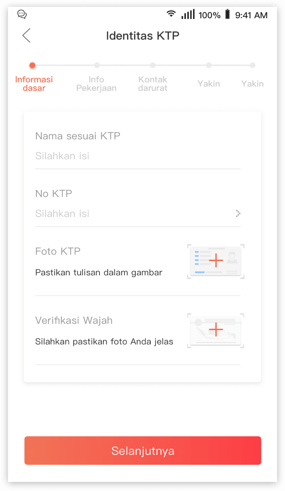
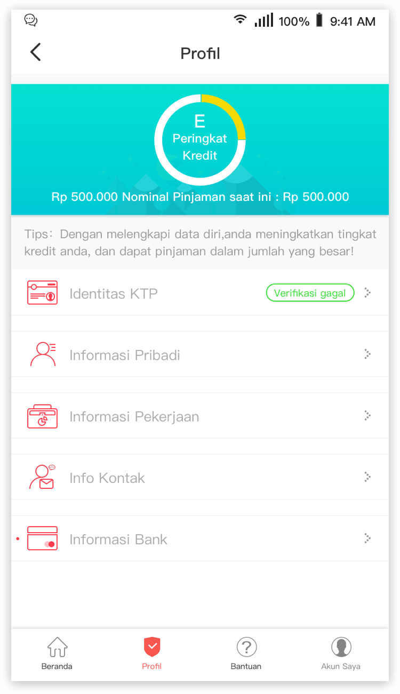
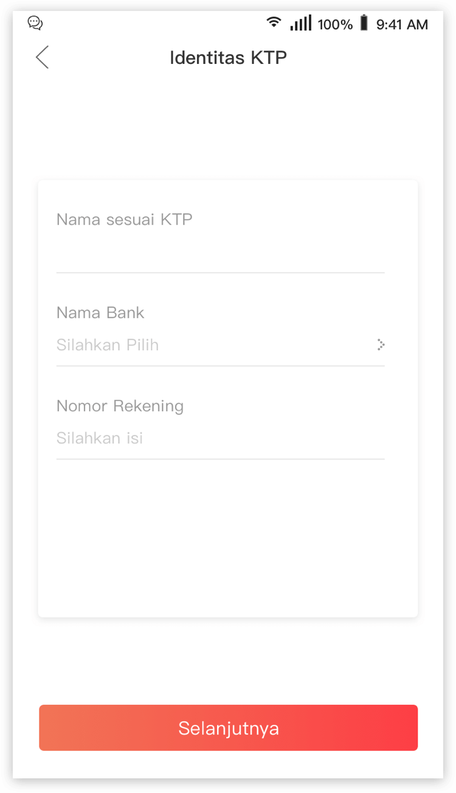

Penyabungkan Bank?
Tips
Editor Super Pinjaman
 14.3
14.3Langkah 1: Langkah pertama, anda harus mengisi Informasi Identitas, sesuai KTP

Langkah 2: Lalu anda dapat menunggu hasil verifikasi

Langkah 3: Setelah verifikasi Informasi Identitas dilewati, kami akan meminta Anda untuk menyambukan APP dengan kartu bank. **Anda juga dapat memiliki inisiatif untuk melihat apakah verifikasi Informasi Identitas telah lulus/ belum melalui “Akun Saya”; jika belum, silakan periksa alasannya dan isi lagi, jika lulus, Anda dapat mengikat kartu tersebut. , dan wujudkan mimpimu di Super Uang!

Peringatan: Pemilik KTP dan Bank haruslah orang yang sama. Jika tidak, proses pinjaman akan gagal. Dengan demikian, kami dapat memastikan bahwa pencairan uang tidak jatuh kepihak lain, melainkan anda sendiri. Akhirnya: jika Anda tidak berhasil mengikat kartu bank Anda, hubungi CS kami dengan cara meninggalkan pesan di inbox Facebook:https://www.facebook.com/SuperPinjam/